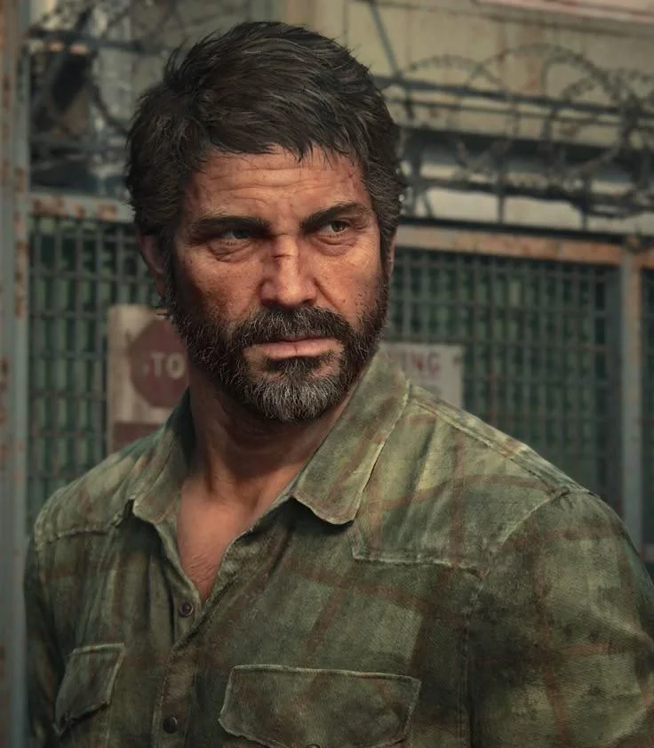
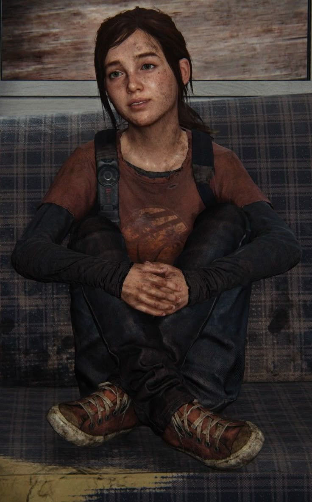
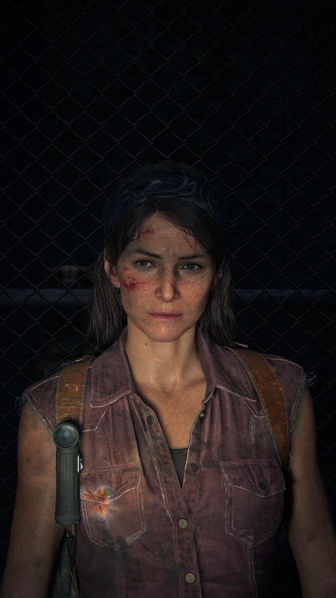

Joel Miller

Joel Miller é um dos personagens mais complexos de The Last of Us justamente porque suas atitudes dificilmente podem ser classificadas apenas como certas ou erradas. Depois de perder Sarah no início do surto, ele passa anos evitando criar vínculos profundos e aprende a sobreviver em um mundo no qual violência, perdas e decisões difíceis se tornaram parte da rotina. Sua relação com Ellie, porém, muda completamente essa postura. Aos poucos, ela deixa de ser apenas alguém que ele precisa transportar e passa a ocupar um espaço semelhante ao de uma filha. Essa transformação chega ao ponto máximo no hospital dos Vaga-lumes. Quando Joel descobre que Ellie precisaria morrer durante o procedimento que poderia permitir aos médicos estudar sua imunidade e tentar desenvolver uma solução para a infecção, ele precisa escolher entre a possibilidade de ajudar a humanidade e salvar a pessoa que passou a considerar sua família. Joel escolhe Ellie. Essa decisão é uma das partes mais discutidas de toda a franquia. Joel invade o hospital, impede o procedimento e leva Ellie embora, mesmo sabendo da importância que sua imunidade poderia ter para os Vaga-lumes. Por isso, sua atitude pode ser interpretada de maneiras diferentes: para alguns, ele salvou alguém que amava de ser sacrificada; para outros, colocou seus próprios sentimentos acima de uma possível oportunidade para toda a humanidade. O jogo não entrega uma resposta simples, e essa ambiguidade é justamente o que torna o final tão marcante. A escolha também revela algo importante sobre Joel: ele não suporta a ideia de perder outra filha. Durante boa parte da jornada, ele tenta negar o vínculo que está criando com Ellie, mas, no hospital, fica evidente que esse sentimento já se tornou mais importante para ele do que qualquer missão. Joel não salva Ellie porque acredita estar fazendo aquilo que é melhor para o mundo. Ele a salva porque, para ele, viver novamente com uma perda semelhante à de Sarah é algo que simplesmente não consegue aceitar. Outro detalhe importante é que, depois de resgatá-la, Joel mente para Ellie sobre o que aconteceu. Ele afirma que os Vaga-lumes encontraram outras pessoas imunes e que haviam parado de procurar uma solução. Essa mentira torna sua decisão ainda mais complexa, porque demonstra que Joel sabe que Ellie poderia não concordar com aquilo que ele fez. Assim, o final não trata apenas de amor e proteção, mas também de egoísmo, medo e das consequências de tomar uma decisão por outra pessoa. Existem também vários detalhes que ajudam a construir o personagem. Joel é natural do Texas e, antes do surto, trabalhava para sustentar Sarah. Ele possui uma forte ligação com música e sabe tocar violão, chegando a mencionar que gostaria de ter sido cantor. Esse lado mais sensível contrasta bastante com o homem fechado e violento que conhecemos vinte anos depois do início da infecção. Outro objeto muito importante para o personagem é seu relógio, presenteado por Sarah no começo do jogo. Mesmo quebrado, Joel continua usando-o décadas depois, mostrando que, apesar de raramente falar sobre a filha, nunca conseguiu realmente deixar aquela parte de sua vida para trás. Ellie chega a perceber o relógio, tornando esse pequeno detalhe uma ligação silenciosa entre o passado de Joel e sua nova relação com ela. Joel também chama atenção por não ser construído como um protagonista tradicional. Ele possui habilidades de combate e sobrevivência impressionantes, mas comete erros, age de maneira egoísta e carrega um passado sobre o qual o jogo revela apenas algumas partes. Sabemos, por exemplo, que durante os anos após o surto ele fez coisas das quais não se orgulha para sobreviver, o que ajuda a explicar por que ele reconhece tão facilmente as estratégias utilizadas por outros sobreviventes. No fim, o que torna Joel tão interessante não é simplesmente sua força ou sua capacidade de sobreviver, mas suas contradições. Ele pode ser extremamente violento e, ao mesmo tempo, profundamente carinhoso; pode proteger Ellie acima de qualquer coisa e, ao mesmo tempo, tirar dela a possibilidade de decidir seu próprio destino. É justamente essa mistura de amor, trauma, medo e egoísmo que faz com que sua decisão no hospital continue sendo um dos momentos mais importantes e debatidos de The Last of Us.
Ellie Williams

Ellie é uma das personagens mais complexas de The Last of Us porque sua importância não está apenas em sua imunidade. Durante a jornada, ela começa a acreditar que sobreviver enquanto tantas outras pessoas morreram precisa significar alguma coisa. Isso ajuda a entender por que chegar aos Vaga-lumes se torna tão importante para ela: Ellie não quer simplesmente continuar viva, ela quer que sua imunidade possa servir para alguma coisa. Esse sentimento está relacionado às perdas que ela acumulou antes mesmo de conhecer Joel. Uma das mais importantes envolve Riley, sua melhor amiga e primeiro grande vínculo afetivo. A história das duas é aprofundada em The Last of Us: Left Behind, conteúdo que acompanha acontecimentos anteriores ao jogo principal e também mostra Ellie tentando cuidar de Joel durante o inverno. A própria Naughty Dog descreve Left Behind como uma história que explora o passado de Ellie e sua relação com Riley. Essa parte de sua história ajuda a explicar a chamada culpa de sobrevivente de Ellie. Quando ela percebe que não sofre as consequências da infecção da mesma forma que outras pessoas, passa a carregar consigo a sensação de que sua sobrevivência precisa ter um propósito. Por isso, no fim da jornada, ela insiste que tudo o que enfrentaram não pode ter sido em vão. Esse pensamento torna a decisão de Joel no hospital ainda mais complicada: ele salva sua vida, mas também impede que Ellie saiba naquele momento o que estava acontecendo e tome sua própria decisão. Apesar de viver em um mundo extremamente violento, Ellie preserva muitos interesses típicos de uma adolescente. Ela gosta de histórias em quadrinhos, especialmente a série fictícia Savage Starlight, e carrega um livro de piadas que utiliza em diferentes momentos da viagem. A Naughty Dog inclusive transformou as piadas em interações opcionais do jogo, fazendo com que esses pequenos momentos ajudassem a desenvolver a amizade entre Ellie e Joel. Outro detalhe interessante está na mochila de Ellie. Durante o inverno, é possível encontrar uma carta escrita por sua mãe, Anna, pouco depois de seu nascimento. A carta revela que Anna confiava profundamente em Marlene e acreditava que ela cuidaria de Ellie. Ellie ainda guarda essa mensagem muitos anos depois, mostrando que mantém uma ligação com uma mãe que praticamente não chegou a conhecer. Ellie, portanto, representa muito mais do que uma possível resposta para a infecção. Ela é uma garota tentando descobrir por que sobreviveu, criando novas relações enquanto carrega as pessoas que perdeu. É justamente essa necessidade de encontrar sentido para sua própria existência que torna sua relação com Joel e o final do primeiro jogo tão importantes.
Tess Servopoulos

Tess começa a história como alguém extremamente prática. Ela e Joel trabalham juntos como contrabandistas em Boston e estão acostumados a negociar, ameaçar e assumir riscos para sobreviver. Diferentemente de Joel, porém, Tess rapidamente percebe que a imunidade de Ellie pode representar algo muito maior do que o pagamento inicialmente prometido pelos Vaga-lumes. Essa mudança é importante porque Tess acaba sendo uma das primeiras pessoas a fazer Joel continuar a missão não por dinheiro, mas pela possibilidade de que Ellie realmente possa fazer diferença. Quando percebe que não conseguirá acompanhar os dois até o fim, ela insiste para que Joel leve Ellie até Tommy e continue procurando os Vaga-lumes. É uma das primeiras vezes em que alguém tenta convencer Joel de que talvez ainda exista algo pelo qual vale a pena lutar além da própria sobrevivência. Uma das curiosidades mais interessantes sobre Tess está nos planos originais da Naughty Dog para a personagem. Durante as primeiras versões da história, Tess não seria simplesmente parceira de Joel: ela seria a principal antagonista do jogo. Nesse roteiro inicial, seu irmão morreria durante os acontecimentos relacionados à fuga de Joel e Ellie de Boston, e Tess responsabilizaria Joel por isso. Ela então perseguiria os dois por um longo período da história em busca de vingança. A ideia chegou a avançar o suficiente para existirem artes conceituais mostrando uma Tess muito diferente da versão final. Porém, os desenvolvedores começaram a considerar pouco convincente que ela atravessasse o país durante tanto tempo apenas para perseguir Joel. O enredo foi reformulado e Tess acabou se tornando sua parceira, enquanto sua participação passou a servir como um dos acontecimentos que empurram Joel e Ellie definitivamente para a viagem. Isso torna a personagem especialmente curiosa quando observamos o desenvolvimento de The Last of Us: alguém que originalmente ocuparia o papel de grande ameaça da história acabou se tornando uma das pessoas que tornam possível a aproximação entre Joel e Ellie.